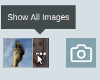
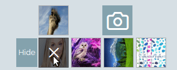

Note that:
- The titles prefixed by BO means that the type was made specifically for the Back office pages
- Otherwise the function is made to be used for both.
For Dom Generation you have the following function.
window.SBsdk.SBfunctions.generateDom(type, options);
The parameters:
-type is a String
-options is an obj
BO - TITLES
Preview: (SECTION TITLE)
~~~~~~~~~~~~~~~~~~~~

Parameters: (SECTION TITLE):
~~~~~~~~~~~~~~~~~~~~
type = 'section_title';
options = {
Title: 'Title',
};
Preview: (SECTION SUBTITLE) :
~~~~~~~~~~~~~~~~~~~~~~~~~

Parameters: (SECTION SUBTITLE)
~~~~~~~~~~~~~~~~~~~~~~~
type = 'section_subtitle';
options = {
Title: 'Title',
};
BO - STICKY ACTION BUTTONS
Preview:
~~~~~~

Parameters:
~~~~~~~~~~~~
type = 'sticky_action_buttons';
options = [
{type: '', class: '', id: '', Title: ''},
...
];
where:
- type can be btn, del-btn or cancel
- notes:
-- type cancel is a link by default it will have CANCEL title.
-- type del-btn by default will have Delete title. It doesnt have an id option, the first delete button added will have a delete widget to confirm deletion.
Example:
window.SBsdk.SBfunctions.generateDom('sticky_action_buttons', [
{type: 'btn', class: 'class-1', id: 'id-1', Title: 'save-1'},
{type: 'btn', class: 'class-2', id: 'id-2', Title: 'save-2'},
{type: 'del-btn', class: 'class-del-1'}, // titles for del btns are optional ||| no ids for del
{type: 'del-btn', class: 'class-del-1'}, // titles for del btns are optional ||| no ids for del
{type: 'cancel', class: 'class-link-1' , id: 'idddd', Title: 'ssss'} // titles for cancels are optional
]);
BO - RADIO
Preview:
~~~~~~

Parameters:
~~~~~~~~~~~~
type = 'radio';
options = {
wrapperClass: 'wrapperClass', //(REQUIRED)
name: 'common-for-all-radios', //(REQUIRED)
disabled: 1,
data: [
{"Title":'', "class":'', "id": '', "value": '', "checked" : 1},
{"Title", "class", "id", "value"}
]
};
Helper Functions:
~~~~~~~~~~~~
- Radios actions: (ie. radio that is generated using generateDom):
SBsdk.SBfunctions.radio_action(inputSelector_wrapperSelector, action);
where:
- action can be reset, disable, enable or check
- for the actions reset, disable, enable the inputSelector_wrapperSelector should be the wrapperClass of the radios
- for the action check the inputSelector_wrapperSelector should be the radio input
note that when radios are disabled you can not check radios
Example:
SBsdk.SBfunctions.radio_action('.shopbuilder-radio', 'reset');
SBsdk.SBfunctions.radio_action('.shopbuilder-radio', 'disable');
SBsdk.SBfunctions.radio_action('.shopbuilder-radio', 'enable');
SBsdk.SBfunctions.radio_action('.shopbuilder-radio input:last', 'check');
BO - CHECKBOX
Preview:
~~~~~~

Parameters:
~~~~~~~~~~~~
type = 'checkbox';
options = {
wrapperClass: 'wrapperClass',
toggle: 1, // to transform it into a switch checkbox
data: [
{"Title":'', "class":'', "id":'', "name":'', "value":'', "checked":1, "disabled":1},
{"Title":'', "class":'', "id":'', "name":'', "value":'', "checked":1, "disabled":1}
]
};
Helper Functions:
~~~~~~~~~~~~
- Checkbox actions: (ie. checkbox that is generated using generateDom):
SBsdk.SBfunctions.checkbox_action(inputSelector, action);
Where:
- inputSelector: ex "input.input-selector" OR "input#input-selector"
- action: enable, disable, check, uncheck
Example:
SBsdk.SBfunctions.checkbox_action('.input-selector', 'uncheck');
SBsdk.SBfunctions.checkbox_action('.input-selector', 'check');
SBsdk.SBfunctions.checkbox_action('.input-selector', 'disable');
SBsdk.SBfunctions.checkbox_action('.input-selector', 'enable');
BO - IMAGE WIDGET
Preview:
~~~~~~~

Parameters:
~~~~~~~~~~~~
type = 'image_upload';
options = {
Title: 'Title',
TitleClass: 'TitleClass',
wrapperId: 'wrapperId',
multiple : 1,
description : 'description that appears under the image uploader',
inputFileData:{ max, id, name, size, class }, // the input of type file data
deleteFileData:{name, id, class}, // the delete btn data
uploadFileData:{ name, id, class}, // the upload btn data
values : [{..},{..}]
// check example to see how to populate this;
//note that it can be an array of objs (multple image upload) or an array (single image)
};
Helper Events:
~~~~~~~~~~~~
- image_uploader EVENT:
This event is used to allow 3rd party apps to respond to the uploaded file
$(document).on("image_uploader",function(event) {
// you will find the following data
console.log(event.input_file_selector); // the input dom reference of the file input.
console.log(event.image_correct_base64); // returns the correct orientation of image using its exif data.
console.log(event.fileObj); // the file object.
});
BO - MINI TABLE IMAGE UPLOADER
Preview:
~~~~~~~


Parameters:
~~~~~~~~~~~~
type = 'mini_multi_image_uploader';
options = {"wrapperId": 'id', "wrapperClass": 'class', // class and id of the main container of the widget
saveSpaceForImages : 1, // option to be able to collapse images or else they will be uploaded one after the other
inputFileData:{class: 'input-class', id :'input-id', size: '' }, // the class id and size for the input of type file
values : [ // if there are already images that have been uploaded and wanted to display them on page load
{
wrapperClass: '', // wrapper class of the image
viewImgData:{ width, height, src, alt, fid, class}, // data of the image
deleteFileData:{class} // class of the delete button
}, // 1st image
{
wrapperClass: '', // wrapper class of the image
viewImgData:{ width, height, src, alt, fid, class}, // data of the image
deleteFileData:{class} // class of the delete button
}, // 2nd image
{
wrapperClass: '', // wrapper class of the image
viewImgData:{ width, height, src, alt, fid, class}, // data of the image
deleteFileData:{class} // class of the delete button
}, // 3rd image
...
],
};
Helper Events:
~~~~~~~~~~~~
- mini_image_uploader EVENT:
This event is used to allow 3rd party apps to respond to the uploaded file
$(document).on("mini_image_uploader",function(event) {
// you will find the following data
console.log(event.action); // upload
console.log(event.error); // the error message - incase upload is of an unallowed extension
console.log(event.success); // incase of success of the upload ie. {'filename': filename.extension, 'file': base64Url, wrapperSelector: wrapperOfImage}
});
Helper Functions:
~~~~~~~~~~~~
- Mini uploader actions:
SBsdk.SBfunctions.mini_multi_image_uploader_actions(wrapperSelector, action, data);
Parameters:
- action can be add_image or del_image
- wrapperSelector: if action = add_image then wrapperSelector is the main wrapper of the whole image widget else if action = del_image then it is the wrapper of the image being deleted
- data: if action = add_image then data is the data of the images to be added
data : [
{
wrapperClass: '', // wrapper class of the image
viewImgData:{ width, height, src, alt, fid, class}, // data of the image
deleteFileData:{class} // class of the delete button
}, // 1st image
{
wrapperClass: '', // wrapper class of the image
viewImgData:{ width, height, src, alt, fid, class}, // data of the image
deleteFileData:{class} // class of the delete button
}, // 2nd image
{
wrapperClass: '', // wrapper class of the image
viewImgData:{ width, height, src, alt, fid, class}, // data of the image
deleteFileData:{class} // class of the delete button
}, // 3rd image
...
]
else if action = del_image then data can be 'success' or 'fail' to be able to remove the image being deleted or remove the throbber effect on it
Example:
// step1 add the image widget to the dom.
output = window.SBsdk.SBfunctions.generateDom('mini_multi_image_uploader', options);
$('body').append(output);
// if it doesnt work out of the box .. you should refresh the sdk libraries or use them in the sdk callbacks
// step2 refresh
SBsdk.SBfunctions.refresh();
// step3 act on upload to save your file
$(document).on("mini_image_uploader",function(event) {
// you will find the following data
console.log(event.action); // upload
console.log(event.error); // the error message - incase upload is of an unallowed extension
console.log(event.success); // incase of success of the upload ie. {'filename': filename.extension, 'file': base64Url, wrapperSelector: wrapperOfImage}
if(event.action == 'upload'){
if(typeof event.error !== 'undefined'){
// do something incase of error (maybe display the message)
alert(event.error);
}
if(typeof event.success !== 'undefined'){
// save the file in your files in case of success
//you will have
// file name being uploaded event.success.filename
// file base64url event.success.file
// referance of the wrapper of the whole image widget event.success.wrapperSelector
if(you_have_saved_it_successfully(event.success)){
// APPEND YOUR IMG
new_img_data = [
{
wrapperClass: 'new-img',
viewImgData:{src: img_src},
deleteFileData:{class: 'delete-btn-class'} // class of the delete button
}
]
window.SBsdk.SBfunctions.mini_multi_image_uploader_actions( event.success.wrapperSelector, 'add_image', new_img_data);
}
}
}
});
// step4 act on delete to del your file
$(document).on('click', ".delete-btn-class",function(event) {
// DELETE YOUR IMAGE
// if failed
//window.SBsdk.SBfunctions.mini_multi_image_uploader_actions($(this).closest('.image-wrapper'), 'del_image', 'fail');
// if success
window.SBsdk.SBfunctions.mini_multi_image_uploader_actions($(this).closest('.image-wrapper'), 'del_image', 'success');
});
TABS
type = 'tabs';
options = {
wrapperClass: "", // wrapper class
list: [ // defines with the list items
{title:'title1', id: 'test1', class:'test1'}, // title and id are required
{title:'title2', id: 'test2', class:'test2', active: '1'}, // active makes the tab active by default
]
};
Example:
type = 'tabs';
options = {
wrapperClass: "tabs-here",
list: [
{title:'title1', id: 'test1', class:'test1'},
{title:'title2', id: 'test2', class:'test2', active: '1'},
{title:'title3', id: 'test3', class:'test3'}
]
};
// append the dom being generated
jQuery('body').append(SBsdk.SBfunctions.generateDom(type, options));
//refresh the tabs library if not added at page load
window.SBsdk_init.SBsdk_libraries('tabs');
Helper Events:
~~~~~~~~~~~~
- sdk_tabs EVENT:
This event is used to allow 3rd party apps to respond to the click of an item of the tabs
$(document).on("sdk_tabs",function(data) {
// you will find the following data
console.log(data.type); // ie "sdk_tabs"
console.log(data.action); // ie "tab-switched"
// and
console.log(data.tabs_data);
// that contains:
console.log(data.tabs_data.id); // the id of the list item clicked
console.log(data.tabs_data.tabs_wrapper_selector); // the selector object reference of the tab wrapper ..
});
--------------------
## TEXTFIELD
**Parameters:**
~~~~~~~~~~~~
type = 'textfield'; options = { wrapperClass: 'wrapper-class', type: 'password' or 'date' or 'search'("search" is BO specifc - to take the design of a search field), // if type is text dont put type option class: 'class', name: 'name', value: 'value', Title: 'title', required: '1', // (don't use if not required) placeholder: '', id: '', size: '', maxleng: '' };
**Helper Functions:**
~~~~~~~~~~~~
**- The textfield type is date:**
The following function will help you get or set the value in the date picker
`function SBsdk.SBfunctions.date_actions(selector, action, value)`
> **Selector** ex `Selector = '#inputSelector'` || `Selector = '#inputSelector'`
> **action** can be 'set' || 'get'
> **value** use in case of `action = 'set'` ex. `value= '12/13/2018'`
**Example:**
jQuery('body').append(window.SBsdk.SBfunctions.generateDom('textfield', { wrapperClass: 'wrapper-date', Title: 'Title', type: 'date', id: 'datee', name: 'date', maxlength: 255, }) ); SBsdk.SBfunctions.refresh(); SBsdk.SBfunctions.date_actions('#datee', 'set', '5/30/1994'); console.log(SBsdk.SBfunctions.date_actions('#datee', 'get'));
------------------------------
## SELECT
**Preview:**
~~~~~~
-single select:

-multiple select:

**Parameters:**
~~~~~~~~~~~~
type = 'select'; options = { wrapperClass: 'wrapper-class', class: 'class', name: 'name', // required for a multi select Title: 'title', required: '1', // (don't use if not required) id: '', multiple: 1, // multiple select (don't use if not multiple) options: [{value: '', selected: 1, label: '', class:''}, ..], };
--------------------------
## SPECIAL SELECT
**Preview:**
~~~~~~~
-single select:

-multi select:

**Parameters:**
~~~~~~~~~~~~
type = 'select'; options = { wrapperClass: 'wrapper-class', class: 'class', name: 'name', // required for a multi select Title: 'title', required: '1', // (don't use if not required) id: '', multiple: 1, // multiple select (don't use if not multiple) options: [{value: '', selected: 1, label: '', class:''}, ..],
select2: { dropdownCssClass: 'dropdownClass', // adds a class for the select dropdown addAsterisk: defaultValueOfSelectField, // adds a '*' for the default value text searchable: { // adds a search for the select placeholder: 'hello' // the place holder text of the search } } };
**Helper Functions:**
~~~~~~~~~~~~
**1- Get and set the special select:**
You can simply get and set any special select using jQuery as any normal select tag:
**Example:**
// GET // where the .class is the class applied on the special-select SELECT tag. jQuery('.class').val();
// SET jQuery('.class').val('option1'); // to apply the set change simple trigger change jQuery('.class').trigger('change');
**2- Append and Remove new elements to any special select:**
`SBsdk.SBfunctions.select2_action(select_selector, action, array_of_options)`
`action` parameter can be **append** or **reset**
*where:*
- **append** appends on existing options
- **reset** removes old options and adds new options
Example:
// normal options options = [ {class:'aa', value: 'abcd' , label: 'ra', imageSelect2: 'img-src.png',customHtml: ''}, {class:'bb', value: 'abcdabcd', selected: 1, label: 'ma', imageSelect2: 'img-src.png',customHtml: 'editme'}, {class:'cc', value: 'abcdabcdabcd', selected: 1, label: 'fa', imageSelect2: 'img-src.png',customHtml: 'editme'}, ]; // parm(0) is the select_selector ("class") ex. ".selector_select" // parm(1) is the action which is append.. // parm(2) is the new options wanted to be appended.. SBsdk.SBfunctions.select2_action('.selector_select', 'append', options);
--------------------------
## SPECIAL SELECT IMAGE WIDGET
**Preview:**
~~~~~~~

**Parameters:**
~~~~~~~~~~~~
type = 'select'; options = { wrapperClass: 'wrapper-class', class: 'class', name: 'name', // required for a multi select Title: 'title', required: '1', // (don't use if not required) id: '', multiple: 1, // multiple select (don't use if not multiple) options: [ { value: '', selected: 1, label: '', class:'',
imageSelect2: 'url', // the image url
customHtml: "html" // some html that is added beside the option Label
},
..
],
select2: { dropdownCssClass: 'dropdownClass', // adds a class for the select dropdown addAsterisk: defaultValueOfSelectField, // adds a '*' for the default value text searchable: { // adds a search for the select placeholder: 'hello' // the place holder text of the search },
image: 1
} };
**Helper Functions:**
~~~~~~~~~~~~
Same helper functions of [special select](/sdk/dom-generation/#special-select)
-----------------------
## SPECIAL SELECT WIDGET
**Preview:**
~~~~~~~

**Parameters:**
~~~~~~~~~~~~
type = 'select'; options = { wrapperClass: 'wrapper-class', class: 'class', name: 'name', // required for a multi select Title: 'title', required: '1', // (don't use if not required) id: '', multiple: 1, // multiple select (don't use if not multiple) options: [ { value: '', selected: 1, label: '', class:'',
imageSelect2: 'url', // the image url
customHtml: "html" // some html that is added beside the option Label
},
..
],
select2: { dropdownCssClass: 'dropdownClass', // adds a class for the select dropdown image: 1 },
widget: { emptyText: 'no more results found', addButtonClass:'class-to-the-add-btn'} };
**Helper Functions:**
~~~~~~~~~~~~
Same helper functions of [special select](/sdk/dom-generation/#special-select)
-------------------------
## UPLOAD
**Parameters:**
~~~~~~~~~~~~
type = 'upload'; options = { wrapperClass: 'wrapper-class', class: 'class', name: 'name', value: '', Title: 'title', required: '1', // (don't use if not required) id: '', size: '' };
------------------
## TEXTAREA
**Parameters:**
~~~~~~~~~~~~
type = 'textarea'; options = { wrapperClass: 'wrapper-class', class: 'class', name: 'name', value: '', Title: 'title', required: '1', // (don't use if not required) id: '', rows:'', cols:'', placeholder:'', maxlength:'' };
-------------
## WYSIWYG TEXT EDITOR
**Preview:**
~~~~~~

**Parameters:**
~~~~~~~~~~~~
type = 'wysiwyg'; options = { wrapperClass: 'wrapper-class-of-wysiwyg', class: 'class', //(REQUIRED) Title: 'title', required: '1', // (don't use if not required) value: '', //(string contains markup --can be html) };
**Helper Functions:**
~~~~~~~~~~~~
**1- Get or Set the wysiwyg data:**
`var get_data = SBsdk.SBfunctions.wysiwyg_data(class_of_wysiwyg);` // gets the data
`SBsdk.SBfunctions.wysiwyg_data(class_of_wysiwyg, 'set', HTML_data);` // set data
**Example**
SBsdk.SBfunctions.wysiwyg_data('.pop-up', 'set', '
hello
'); // sets the html inside the wysiwygvar get_data = SBsdk.SBfunctions.wysiwyg_data('.pop-up'); // returns the html inside the wysiwyg that is
hello
**2- Configure your wysiwyg:**
- To change the configuration of all of your wysiwyg use the function:
`window.SBsdk.SBfunctions.wysiwyg_configuration(config);`
A) by default you will have the configuration used in Shopbuilder platform that is
config.toolbar = [["Bold", "Italic", "Underline", "JustifyLeft", "JustifyCenter", "JustifyRight", "JustifyBlock", "BidiLtr", "BidiRtl", "BulletedList", "NumberedList", "Outdent", "Indent", "Undo", "Redo", "Link", "Unlink", "Anchor", "base64image", "Cut", "Copy", "Paste", "PasteText", "PasteFromWord", "RemoveFormat", "Format", "FontSize", "video_filter"]];
To get the SB config simply use:
`config = '';`
`window.SBsdk.SBfunctions.wysiwyg_configuration(config);`
Ex. Let's try it out together .. copy the following code into the console and voilà.
config = ''; // gets the configurations of sb // set the configuration window.SBsdk.SBfunctions.wysiwyg_configuration(config); // then insert your wysiwyg dom = window.SBsdk.SBfunctions.generateDom('wysiwyg', {"wrapperClass": 'hello', "class": 'class-editor' , "Title": 'title',"required":1, "value": '
Hello
world!
'}); jQuery('body').append(dom); SBsdk.SBfunctions.refresh();
**B) To get ALL of the supported items in a wysiwyg**
`config = {};`
`window.SBsdk.SBfunctions.wysiwyg_configuration(config);`
SET
`config = {};`
That is equivalent to:
config= {};
// Toolbar configuration generated automatically by the editor based on config.toolbarGroups.
config.toolbar = [
{ name: 'document', groups: [ 'mode', 'document', 'doctools' ], items: [ 'Source', '-', 'Save', 'NewPage', 'Preview', 'Print', '-', 'Templates' ] },
{ name: 'clipboard', groups: [ 'clipboard', 'undo' ], items: [ 'Cut', 'Copy', 'Paste', 'PasteText', 'PasteFromWord', '-', 'Undo', 'Redo' ] },
{ name: 'editing', groups: [ 'find', 'selection', 'spellchecker' ], items: [ 'Find', 'Replace', '-', 'SelectAll', '-', 'Scayt' ] },
{ name: 'forms', items: [ 'Form', 'Checkbox', 'Radio', 'TextField', 'Textarea', 'Select', 'Button', 'ImageButton', 'HiddenField' ] },
'/',
{ name: 'basicstyles', groups: [ 'basicstyles', 'cleanup' ], items: [ 'Bold', 'Italic', 'Underline', 'Strike', 'Subscript', 'Superscript', '-', 'CopyFormatting', 'RemoveFormat' ] },
{ name: 'paragraph', groups: [ 'list', 'indent', 'blocks', 'align', 'bidi' ], items: [ 'NumberedList', 'BulletedList', '-', 'Outdent', 'Indent', '-', 'Blockquote', 'CreateDiv', '-', 'JustifyLeft', 'JustifyCenter', 'JustifyRight', 'JustifyBlock', '-', 'BidiLtr', 'BidiRtl', 'Language' ] },
{ name: 'links', items: [ 'Link', 'Unlink', 'Anchor' ] },
{ name: 'insert', items: [ 'Image', 'base64image', 'Flash', 'Table', 'HorizontalRule', 'Smiley', 'SpecialChar', 'PageBreak', 'Iframe' ] },
'/',
{ name: 'styles', items: [ 'Styles', 'Format', 'Font', 'FontSize' ] },
{ name: 'colors', items: [ 'TextColor', 'BGColor' ] },
{ name: 'tools', items: [ 'Maximize', 'ShowBlocks' ] },
{ name: 'others', items: [ '-' ] },
{ name: 'about', items: [ 'About' ] }
];
// Toolbar groups configuration.
config.toolbarGroups = [
{ name: 'document', groups: [ 'mode', 'document', 'doctools' ] },
{ name: 'clipboard', groups: [ 'clipboard', 'undo' ] },
{ name: 'editing', groups: [ 'find', 'selection', 'spellchecker' ] },
{ name: 'forms' },
'/',
{ name: 'basicstyles', groups: [ 'basicstyles', 'cleanup' ] },
{ name: 'paragraph', groups: [ 'list', 'indent', 'blocks', 'align', 'bidi' ] },
{ name: 'links' },
{ name: 'insert' },
'/',
{ name: 'styles' },
{ name: 'colors' },
{ name: 'tools' },
{ name: 'others' },
{ name: 'about' }
];
note that to use an image plugin you can use either: `base64image` or `Image`
**C) you can customize your configuration to get the desired wysiwyg**
- choose the items from the Supported items of the wysiwyg mentioned above in part (B)
**Example**:
// It should be the first function to execute before any wysiwyg injection
config= {};
config.toolbar = [[ 'Cut', 'Copy', 'Paste', 'PasteText', 'PasteFromWord', '-', 'Undo', 'Redo' ]];
window.SBsdk.SBfunctions.wysiwyg_configuration(config);
// then insert your wysiwyg dom = window.SBsdk.SBfunctions.generateDom('wysiwyg', {"wrapperClass": 'hello', "class": 'class-editor' , "Title": 'title',"required":1, "value": '
Hello
world!
'}); jQuery('body').append(dom); SBsdk.SBfunctions.refresh();
- To add a seperator between an item and another we use '-':
**Example**: Try it out with us
// It should be the first function to execute before any wysiwyg injection
config= {};
config.toolbar = [[ 'Cut', 'Copy', '-', 'Undo', 'Redo' ]];
window.SBsdk.SBfunctions.wysiwyg_configuration(config);
// then insert your wysiwyg dom = window.SBsdk.SBfunctions.generateDom('wysiwyg', {"wrapperClass": 'hello', "class": 'class-editor' , "Title": 'title',"required":1, "value": '
Hello
world!
'}); jQuery('body').append(dom); SBsdk.SBfunctions.refresh();
- to group your items and devide them on lines: note that '/' will make add your items on a new line
**Example:** Try it out
config= {};
// create your groups
config.toolbarGroups = [ { name: 'clipboard'}, // a clipboard group '/', // new line { name: 'basicstyles'}, // basicstyles group { name: 'paragraph'} // paragraph group ];
// add the items of each group config.toolbar = [ { name: 'clipboard', items: [ 'Cut', 'Copy', 'Paste', 'PasteText', 'PasteFromWord', '-', 'Undo', 'Redo' ] }, // for clipboard group the following items. '/', // new line { name: 'basicstyles', items: [ 'Bold', 'Italic', 'Underline', 'Strike', 'Subscript', 'Superscript', '-', 'CopyFormatting', 'RemoveFormat' ] }, // for the basic styles { name: 'paragraph', groups: [ 'list', 'indent', 'blocks', 'align', 'bidi' ], items: [ 'NumberedList', 'BulletedList', '-', 'Outdent', 'Indent', '-', 'JustifyLeft', 'JustifyCenter', 'JustifyRight'] } // for the paragraph ];
window.SBsdk.SBfunctions.wysiwyg_configuration(config);
// then insert your wysiwyg dom = window.SBsdk.SBfunctions.generateDom('wysiwyg', {"wrapperClass": 'hello', "class": 'class-editor' , "Title": 'title',"required":1, "value": '
Hello
world!
'}); jQuery('body').append(dom); SBsdk.SBfunctions.refresh();
----------------
## LINK
**Parameters:**
~~~~~~~~~~~~
type = 'link'; options = { wrapperClass: 'wrapper-class', class: 'class', //(REQUIRED) Title: 'title', download : 1, href: '', id: '', target: '', wrapper: 1, // if you want a link with no wrapper .. remove the wrapper option type:'' // can be "btn", "delete" or "add" (this option is for the BO) };
-------------
## FIELDSET
We have 2 kinds of fieldsets: (Styled only for BO)
1.Section Fieldset:
**Parameters:**
~~~~~~~~~~~~
type = 'fieldset'; options = { wrapperClass: 'wrapper-class', mainTitle: 'mainTitle', subTitle: 'subTitle', content: dom, opensManyAtaTime: 1, // dont put this option if what was wanted is to open one fieldset at a time opened_by_default: '1', // dont put this option if what was wanted is to have the fieldset closed };
**Preview :**
~~~~~~~~~~~~~~~~~~~~~~~~~
Closed Fieldset

Opened Fieldset

**Example :** Let's try it together, open your console
~~~~~~~~~~~~~~~~~~~~~~~~~
```
type = 'fieldset';
options = {
wrapperClass: 'wrapper-class',
mainTitle: 'mainTitle',
subTitle: 'subTitle',
content:'dom',
};
jQuery('body').append(SBsdk.SBfunctions.generateDom(type, options));
// window.SBsdk_init.SBsdk_fieldsets(); // if not loaded on page load
```
2.Normal Fieldset:
**Parameters:**
~~~~~~~~~~~~
type = 'fieldset'; options = { wrapperClass: 'wrapper-class', mainTitle: 'mainTitle', subTitle: 'subTitle', content: dom, type: 'fieldset', opened_by_default: '1', // dont put this option if what was wanted is to have the fieldset closed };
**Preview :**
~~~~~~~~~~~~~~~~~~~~~~~~~
Closed Fieldset

Opened Fieldset

**Example :** Let's try it together, open your console
~~~~~~~~~~~~~~~~~~~~~~~~~
```
type = 'fieldset';
options = {
wrapperClass: 'wrapper-class',
mainTitle: 'mainTitle',
subTitle: 'subTitle',
content:'dom',
type: 'fieldset',
};
jQuery('body').append(SBsdk.SBfunctions.generateDom(type, options));
// window.SBsdk_init.SBsdk_fieldsets(); // if not loaded on page load
```
---------------------
## BUTTON
**Parameters:**
~~~~~~~~~~~~
type = 'button'; options = { Title: 'Title', class: 'class', id: 'id', };
----------------
#### Examples
//Ex Radio
window.SBsdk.SBfunctions.generateDom('radio', { "wrapperClass": 'hellooooo', // wrapper class "name" : "name_radios[name_radios]" , // (required) name that is provided for all the radio inputs data: [ {"Title":'ok', "class": 'ddd', "id": 'dddff', "value": 1, "checked": 1}, {"Title": 'ok1', "class": 'aaa', "id": 'ssd', "value": 0} ] });
//Ex. checkboxes:
window.SBsdk.SBfunctions.generateDom('checkbox', { "wrapperClass": 'hellooooo', "toggle": 1, // optional in case you wanted a toggle like checkbox data: [ {"Title":'ok', "class": 'ddd', "id": 'dddff', "value": 1, "checked": 1}, {"Title": 'ok1', "class": 'aaa', "id": 'ssd', "value": 0, "disabled": 1} ] });
//Ex. text field
window.SBsdk.SBfunctions.generateDom('textfield', { wrapperClass: 'sb-manage-input', Title: 'Title', required: 1, placeholder: 'placeholder', id: 'i-am-an-id', name: 'hello', size: 60, maxlength: 255, value: 'default value' });
// this will generate
//
//Ex. Fieldsets
window.SBsdk.SBfunctions.generateDom('fieldset', {
wrapperClass: 'fieldset-custom-wrapper',
mainTitle: 'Hello fieldset',
subTitle: '',
content: 'fieldset content fieldset content fieldset content '
});
//Ex. normal select
window.SBsdk.SBfunctions.generateDom('select', {
required:1,
Title : 'hello select',
wrapperClass: 'select-dummy-wrapper-class',
class: 'select-dummy-class',
id: 'id-select',
options: [
{'value': 'one', 'label' : 'one'},
{'value': 'two', 'selected' : 'selected' , 'label' : 'two'}
]
});
// this will generate
//
//Ex. for a select2 library -- select2 // before to $('select').select2(options) where options = {'dropdownCssClass':'sb-intro-theme-drop'}
// After:
window.SBsdk.SBfunctions.generateDom('select', { select2: {'dropdownCssClass':'sb-intro-theme-drop'} , options: [ {'value': 'one', 'label' : 'one'}, {'value': 'two', 'selected' : 'selected' , 'label' : 'two'} ] });
//if you want a normal select field dont add {{select2}} option
// if you want the select2 but you dont have options for it: select2: {}
//Ex. Multiple select2
window.SBsdk.SBfunctions.generateDom('select', { select2: {} , // Dont include if you want a normal multiple select multiple: 1, name : 'multi[]', options: [ {'value': 'one', 'label' : 'one'}, {'value': 'two', 'selected' : 'selected' , 'label' : 'two'} ] });
//Ex. Multiple select2 widget:
window.SBsdk.SBfunctions.generateDom('select', { select2: {} , // Dont include if you want a normal multiple select multiple: 1, name : 'multi[]', widget: { emptyText: 'Type To Add A new X', addButtonClass: 'add-x-functionality' }, options: [ {'value': 'one', 'label' : 'one'}, {'value': 'two', 'selected' : 'selected' , 'label' : 'two'} ] });
//Ex. Multiple select2 widget:
window.SBsdk.SBfunctions.generateDom('select', { select2: { image:1, dropDownCss: 'drop-down-class', } , // Dont include if you want a normal multiple select multiple: 1, name : 'multi[]', widget: { emptyText: 'Type To Add A new X', addButtonClass: 'add-x-functionality' }, options: [ { 'value': 'one', 'label' : 'one', class: 'class1', imageSelect2: 'https://../img-url.png', customHtml : '
{'value': 'two',
'selected' : 'selected' ,
class: 'class2',
'label' : 'two',
imageSelect2: 'https://../img-url.png',
customHtml : '<div>Good Morning</div>'
}
] });
//Ex. Image upload:
window.SBsdk.SBfunctions.generateDom('image_upload', {
Title: Image Upload Section Title , // Title of the upload
TitleClass: 'image-upload-section-title-class' , // class of the title
multiple: 1, // if we want to upload multiple images (dont use if you want a single image uploader)
wrapperId : 'wrapper-Id-of-the-image-uploader',
inputFileData: { // info needed for the input type file (that uploads the image)
name: 'a',
id: 'hello',
max: '1234556',
size: '1234',
},
uploadFileData: { // upload button that is clicked automatically after the upload
name: 'a1',
id: 'hello1',
},
// values is used if there are already existing images added
// if multiple image upload then:
values: [
{viewImgData:{ width, height, src, alt }, deleteFileData:{ id, name}, muliple:1 },
{ viewImgData:{ width, height, src, alt }, deleteFileData:{ id, name}, muliple:1},
{ viewImgData:{ width, height, src, alt }, deleteFileData:{ id, name}, muliple:1 },
]
// if single image upload
values: { viewImgData:{ width, height, src, alt }, deleteFileData:{ id, name} }
//(Where viewImgData is all the information for the image)
//(and deleteFileData is all the information for the delete button of the image)
// and multiple is required for muliple image upload
});
wysiwyg example:
window.SBsdk.SBfunctions.generateDom('wysiwyg', {"wrapperClass": 'hello', "class": 'class-editor' , "Title": 'title',"required":1, "value": '
Hello
world!
'});```